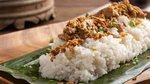

Chicken Pastil

Recipe Description
Chicken Pastil is basically banana leaves wrapped steamed rice
topped with flavorful shredded chicken meat called "kagikit".
A lot of people refer to the shredded meat as pastil but according
to some locals. If it's only the meat, you call it kagikit. It's
the perfect satisfying meal whether you eat it for breakfast,
lunch, or dinner. Making it at home is so easy too.
Ingredients
- 1 whole chicken quartered, cleaned
- 1 teaspoon black peppercorn
- 2 bay leaves
- 1 thumb size ginger, peeled and minced
- 1 large onion, peeled and minced
- 8 cloves garlic, peeled and minced
- 1 cup soy sauce
- 1 teaspoon Turmeric powder
- 2 tablespoon Vegetable oil
- 1 pc Knorr Chicken Cube, dissolved in 2 cups of water
- Knorr Liquid Seasoning Original, to taste
- Salt and pepper to taste
- 1 1/2 kilos cooked white rice
Steps
- Heat a large stock pot over medium heat.
- Add the quartered chicken, salt, bay leaves, and pepper. Add enough water to cover the chicken.
- Bring to a boil until the chicken is tender. Strain and set aside to cool.
- Shred the chicken using a fork or your fingers. Set aside
- Heat up a separate pan over medium heat, add oil, and saute the onions and garlic until the onions are soft and translucent. Add ginger and continue to saute until fragrant.
- Add the shredded chicken, Turmeric, and saute for a minute before adding the Knorr chicken cube dissolved in water and soy sauce.
- Season to taste with Knorr Liquid Seasoning Original, salt, and pepper. Set aside.
- Now we're ready to assemble the Chicken pastil. Take one banana leaf and place a cup of steamed rice on top followed by half a cup of the seasoned shredded chicken. Wrap to form a parcel or pouch.
- Repeat until there's no more shredded chicken left.
- Enjoy with your family!